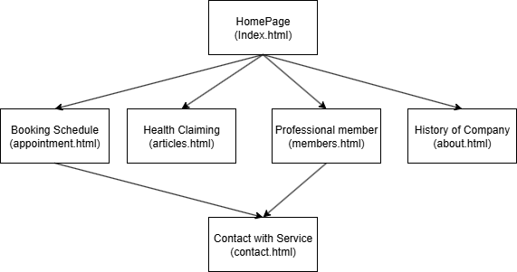
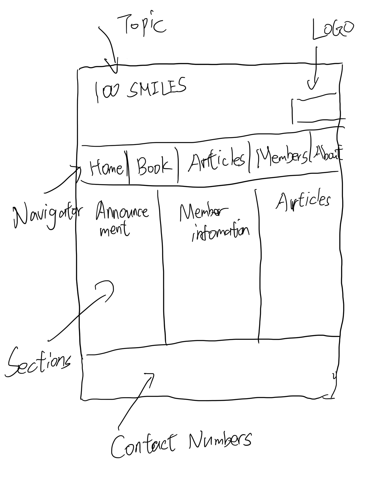

Name: Mingsen Hua
Enhance the company business's online presence and expand their reach through out these operations
(like offer discount through email, value patient and return visitors, and retaining through out these Articles).
Attempting to increase about 20% of the booking number and enlarge 50% more area for serving when compared to the previous baseline(possibly).
The People Who required First Dental visit, to Adult's Daily Routine check-up where lived in Australia Razole
(Age Range from child to retiree) (Typical Age from 3 to 70).
It will have a larger Book for consulation Button for low-vision group, and voice output for the existing blinding group.
My design will using dodgerblue at the header, gray at the footer, navigator area as lightgray for the background color,
and navi content for rosybrown for identification.
The flowchart below shows the structure and navigation of the 100SMILES Dental Care website.
This WireFrames at the below shows the structure of the First ver. design with index.html:
